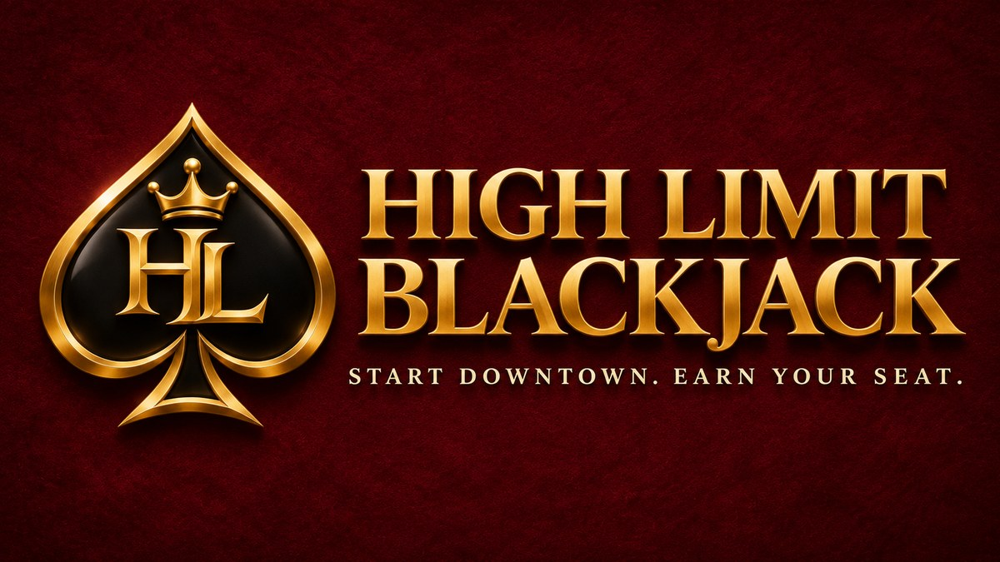

High Limit Blackjack
Casino blackjack with basic strategy and card counting training. Play money only.
Need help or found a problem?
Email highlimitblackjack@icloud.com with your iPhone model, iOS version and what happened.
Email highlimitblackjack@icloud.com with your iPhone model, iOS version and what happened.
Common questions
- How does the casino ladder work? Start at the Downtown Club and work your way up through the Silver Palace, the Grand Royale, the High Limit Salon and the Private Salon. Each casino has its own table limits and needs its minimum bet in your bankroll.
- My bankroll ran out. The Downtown Club will advance a $5,000 marker whenever you run out, as often as you need. Markers carry no interest and no deadline.
- Why can't I get into the Grand Royale? Casinos past the Silver Palace require no outstanding markers. Pay your markers back at Cash Out.
- How do I get an invitation? The High Limit Salon invites players with a net worth (bankroll minus markers) of $100,000; the Private Salon, $1,000,000.
- What do the buttons do? Game Settings > Show Table Guide walks through every button at the table.
- Why can't I split my aces again? Turn on Re-split Aces in Game Settings. Split aces get one card each, as in a casino.
- Where is the card count? Tap the count button at the table, or turn on Always Show Count in Game Settings.
- When does the shoe get shuffled? When the cut card comes out, the dealer finishes that hand and shuffles before the next bet.
- Is this real gambling? No. High Limit Blackjack uses play money only, with no prizes, and chips can't be bought.
- How do I remove the ads? Game Settings > Remove Ads, a one-time purchase. On a new iPhone, tap Restore Purchase.
Privacy
High Limit Blackjack itself collects no personal data; its ads are non-personalized. Read the privacy policy.